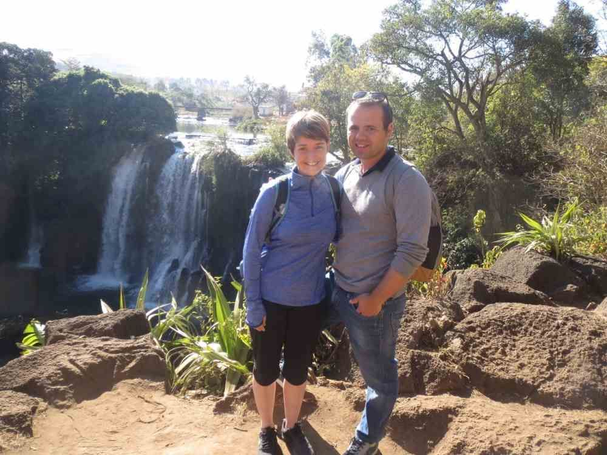
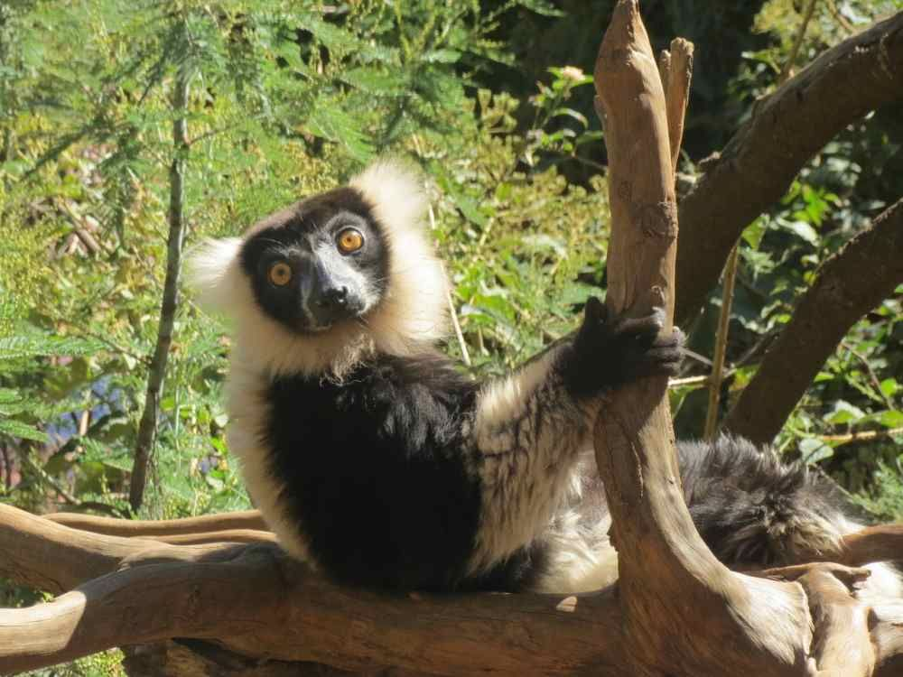
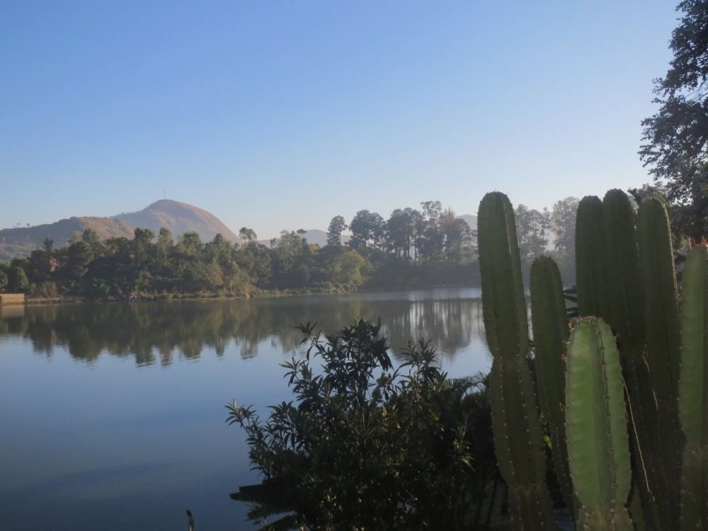

Wir haben unsere Ferien in Madagaskar sehr genossen und sind mit vielen bleibenden Erinnerungen zurück nach Hause gekehrt
„Liebes PRIORI-Team

Da wir noch eine Woche auf La Réunion waren und etwas Zeit brauchten, um zu Hause wieder anzukommen, kommt unsere E-Mail etwas verspätet.Nichts desto trotz haben wir unsere Ferien in Madagaskar sehr genossen. Und sind mit vielen bleibenden Erinnerungen zurück nach Hause gekehrt. Als erstes möchten wir sagen, dass wir uns von PRIORI super beraten gefühlt haben. All unsere Fragen wurden beantwortet und dies innerhalb kürzester Zeit. Bodo hat uns auch ganz viele Tipps gegeben sowie keine Mühe gescheut, um uns weiterzuhelfen. Diesen Service fanden wir wirklich super! Auch die Unterlagen zu Madagaskar, welche Sie auf Ihrer Homepage anbieten oder uns teilweise auch zugesandt haben, warteten mit vielen nützlichen sowie konkreten Tipps und Ideen.
Mit unserem Guide Rina waren wir auch sehr zufrieden.

Er war immer überpünktlich, hat all unsere Ideen aufgenommen und uns wenn immer möglich weitergeholfen. Er war etwas „ruhig“, aber sehr höflich und wir haben uns immer sicher gefühlt mit ihm.
Zu unserer Madagaskar-Woche: Wir haben die Tage im Andasibe- und Mantadia-Nationalpark sehr genossen und waren positiv überrascht, dass es nicht mehr Leute hatte. Die Natur sowie die Tiere waren einfach wunderschön. Wir genossen es auch sehr zwischendurch alleine durch ein Dorf zu schlendern. Oder auf dem Markt etwas zu kaufen und all die Eindrücke aufzunehmen. Manchmal waren wir etwas unsicher im Kontakt mit den Einheimischen. Wir waren eher vorsichtig, gleichzeitig wünschten wir uns mit den Leuten in Kontakt zu treten.

Der Tag in Masindray, an welchem wir Hilfsprojekte besuchten, war auch interessant und schön – so was würden wir gleich wieder machen! Auch Ampefy war nett und hübsch.Was uns am wenigsten gefallen hat war diese Reptilienfarm auf dem Weg nach Andasibe (weil die Tiere dort eingesperrt sind und von jedem Guide angefasst werden) sowie der Rova Palast in Tana, weil es gar nicht viel zu sehen oder zu erzählen gab…
Anbei senden wir Ihnen ein paar Impressionen – falls Sie Bilder für Ihre Homepage nutzen können, dürfen Sie diese gerne verwenden!
Ganz liebe Grüsse“
(Evelyn & Carmelo aus Thalwil)